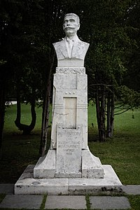

Иван Минчов Вазов е роден на 9 юли (27 юни стар стил) 1850 г. в Сопот. Произхожда от семейство на
средно заможен търговец, в което на почит са строгият ред и патриархалността, уважение към религиозните
и битовите традиции, отзивчивостта към възрожденските просветителски и патриотични настроения. Брат е на
военните дейци Георги Вазов и Владимир Вазов, на общественика и политик Борис Вазов, а също на доктор
Кирил (Кирко) Вазов.
Творчеството на Вазов е отражение на две исторически епохи – Възраждането и следосвобожденска България.
Иван Вазов е академик на Българската академия на науките и министър на народното просвещение от 7
септември 1897 г. до 30 януари 1899 г. от Народната партия.
Иван Вазов завършва местното взаимно и класно училище, запознава се с оригинална и преводна
българоезична литература. С помощта на учителя Партений Белчев, руски възпитаник, отрано се
приобщава и към рускоезичната поезия. През 1866 г. учи гръцки и турски език в Калоферското
училище при Ботьо Петков (бащата на Христо Ботев), като става негов помощник даскал. Там
намира богата библиотека от френскоезични и рускоезични книги, които изиграват голяма роля
за литературното му развитие.

На Балканските войни през 1912 – 1918 г. откликва с 3 стихосбирки – поетична хроника на
събитията. Вазов е между тези, които се противопоставят на въвличането на България в Първата
световна война на страната на Тройния съюз, но когато това става, възпява в стиховете си
победите на българските войски. Втората национална катастрофа приема мъчително, с чувството,
че е дочакал разгрома на своя свят, но не изгубва вярата си в бъдещето на България. През
1920 г. тържествено е отпразнуван 70-годишният юбилей на Вазов, отдавна вече спонтанно
обявен за народен поет. Успял да види всенародната любов и признателност, през 1921 г. умира
от разрив на сърцето в дома си в София. Действителен член на Българското книжовно дружество
(днес Българска академия на науките) от 1881 г., почетен член на БАН от 1921 г.